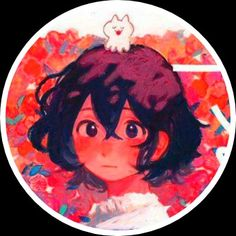
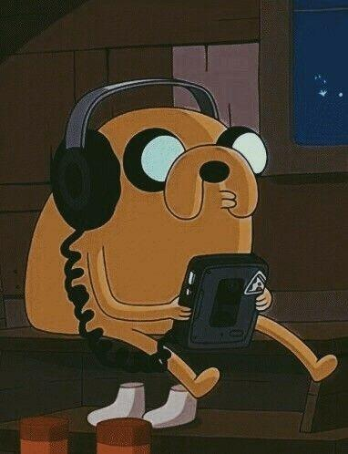
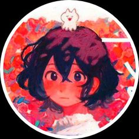
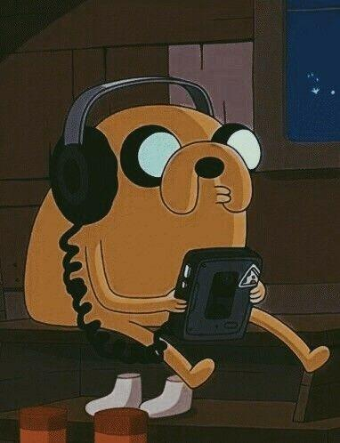
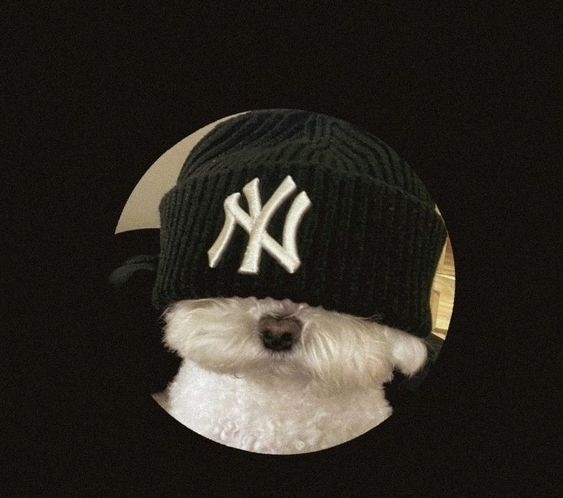
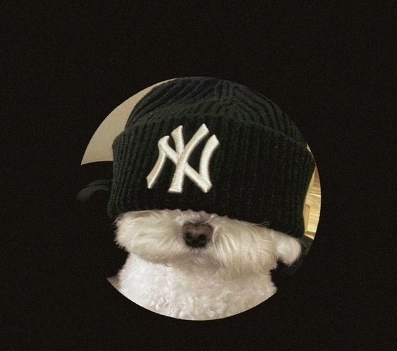

Más allá del jardín" es una miniserie animada que cuenta la historia de dos hermanos, Wirt y Greg, que se pierden en un extraño bosque y tratan de encontrar el camino de regreso a casa
. A lo largo de la serie, los hermanos se encuentran con diversos personajes y enfrentan desafíos mientras exploran este misterioso lugar
En resumen, "Más allá del jardín" es una miniserie animada que sigue las aventuras de dos hermanos mientras se pierden en un extraño bosque y tratan de encontrar el camino de regreso a casa. La serie ha sido elogiada por su originalidad, personajes inolvidables y múltiples capas de significado.
Gravity FALLS
Gravity Falls: Un verano de misterios" es una serie animada que sigue las aventuras de los gemelos Dipper y Mabel Pines mientras pasan el verano con su tío-abuelo Stan en Gravity Falls, Oregón
. Juntos, descubren y resuelven los misterios sobrenaturales que acechan en el pueblo, todo mientras se enfrentan a situaciones cómicas y emocionantes
La serie combina elementos de comedia, misterio y aventura, y ha sido elogiada por su narrativa inteligente y su estilo de animación
. A lo largo de la serie, los personajes principales se encuentran con criaturas extrañas, descubren secretos ocultos y desentrañan los enigmas que rodean a Gravity Falls
"Gravity Falls: Un verano de misterios" consta de dos temporadas y un total de 40 episodios
. Ha sido elogiada por su originalidad, su humor y su capacidad para abordar temas más profundos a través de su trama
HORA DE AVENTURA
Hora de Aventura" sigue las emocionantes y alocadas aventuras de Finn y Jake en el colorido y fantástico mundo de Ooo.
Finn es un valiente niño humano que se embarca en misiones heroicas para proteger a los habitantes de Ooo y luchar contra el mal.
Jake, su mejor amigo y hermano adoptivo, tiene la habilidad de estirar y transformar su cuerpo, lo que le permite enfrentar desafíos de manera única.
Juntos, Finn y Jake se enfrentan a enemigos poderosos, resuelven misterios y exploran las diferentes tierras y reinos de Ooo.
"Hora de Aventura" combina elementos de comedia, acción, fantasía y drama, y ha sido elogiada por su narrativa inteligente y su capacidad para abordar temas más profundos.


 



 
